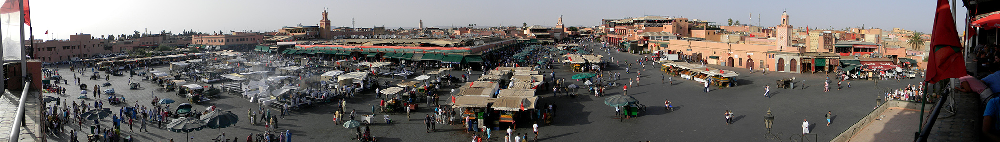

The history of Marrakesh, a city in southern Morocco, stretches back nearly a thousand years.
The country of Morocco itself is named after it.
Founded c. 1070 by the Almoravids as the capital of their empire, Marrakesh went on to also serve as the imperial capital of the Almohad Caliphate from 1147.
The Marinids, who captured Marrakesh in 1269, relocated the capital to Fez, leaving Marrakesh as a regional capital of the south.
During this period, it often broke off in rebellion into a semi-autonomous state.
Marrakesh was captured by the Saadian sharifs in 1525, and resumed its status as imperial capital for a unified Morocco after they captured Fez in 1549.
Marrakesh reached its epic grandeur under the Saadians, who greatly embellished the city.
The Alawite sharifs captured Marrakesh in 1669.
Although it served frequently as the residence of the Alawite sultans, Marrakesh was not their definitive capital, as Alawite sultans moved their courts frequently between various cities.
The region of Marrakesh, the plain south of the Tensift River in southern Morocco, was inhabited by Berber farmers since Neolithic times, and numerous stone implements have been unearthed in the area.
